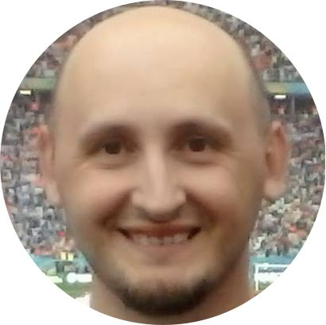

|  |
Tuttofare di cose inutili Cristian si è laureato in fisica nel lontano 2001. Dopo un anno di cazzeggio è stato preso dai Carabineri per l'ormai obsoleto servizio militare, al termine del quale ha fatto l'errore di accettare un colloquio di lavoro con Faccia-di-Merda Danielli, che lo ha indotto a intraprendere la carriera di fisico sanitaria. Si è specializato in fisica sanitari con grande dolore nel 2007 e, dopo aver mandato a fare in culo il Faccia-di-Merda si è dato alla carrirera universitaria, prima sviluppando sequenze RM per una macchina che funzionava solo a calci, poi facendo mischioni di cose a caso. Nel mentre si è pure fatto un dottorato di ricerca in bioingegneria per completare il triplete di pezzi-di-carta-inutili. Al termine di questa esperienza il nostro ha capito di fare ancora più schifo come ricercatore che come fisico sanitario, e non avendo altri "talenti" da vendersi è tornato con rassegnazione alla fisica medica. |
| Periodo | Attività |
|---|---|
| 1 ott 2017 – oggi | Dirigente Fisico ASST Spedali Civili, Brescia, Italia |
| 1 mag 2015 – 30 set 2017 | Esperto in fisica medica Medipass s.r.l, Bologna, Italia |
| 16 giu 2013 – 30 apr 2015 | Assegnista Istituto Nazionale per la Ricerca sul Cancro (IST), IRCCS AOU San Martino, Genova, Italia |
| 16 giu 2013 – 30 apr 2015 | Collaboratore Dipartimento di Matematica, Università degli studi di Genova, Italia |
| 1 ago 2011 – 31 ago 2011 | Collaboratore Nextage s.r.l., Genova, Italia |
| 1 ott 2007 – 31 mag 2010 | Collaboratore Dipartimento di Informatica, Bioingegneria, Robotica e Ingegneria dei Sistemi (DIBRIS), Università degli Studi di Genova, Italia |
| 1 apr 2003 – 30 set 2007 | Specializzando in fisica sanitaria Azienda Ospedaliero Universitaria Policlinico di Modena, Italia |
| 1 mar 2002 – 31 mar 2003 | Carabiniere |
| Radioterapia | ⭐⭐⭐⭐⭐ |
| Risonanza magnetica | ⭐⭐⭐⭐ |
| Analis dati | ⭐⭐⭐ |
| Python | ⭐⭐⭐ |